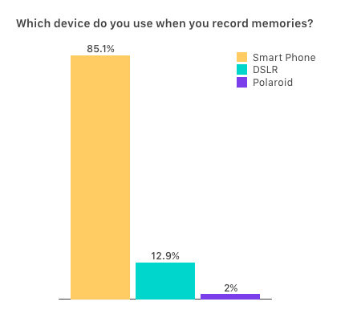
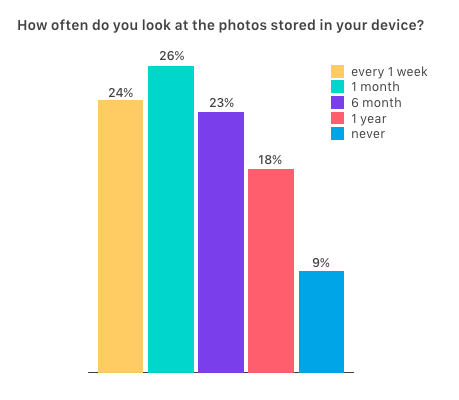
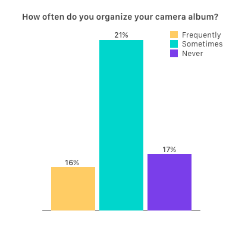
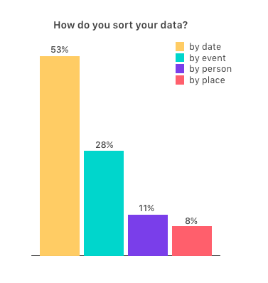
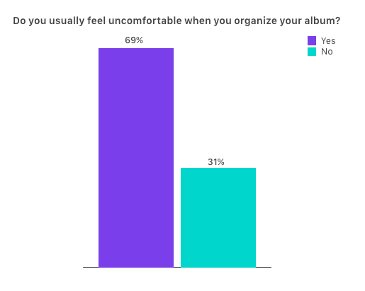
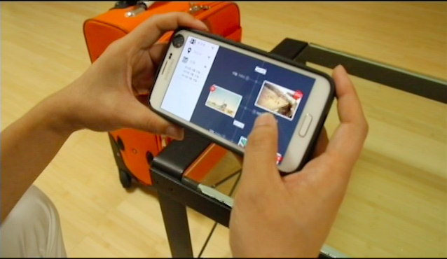
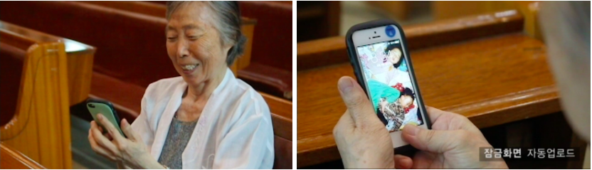
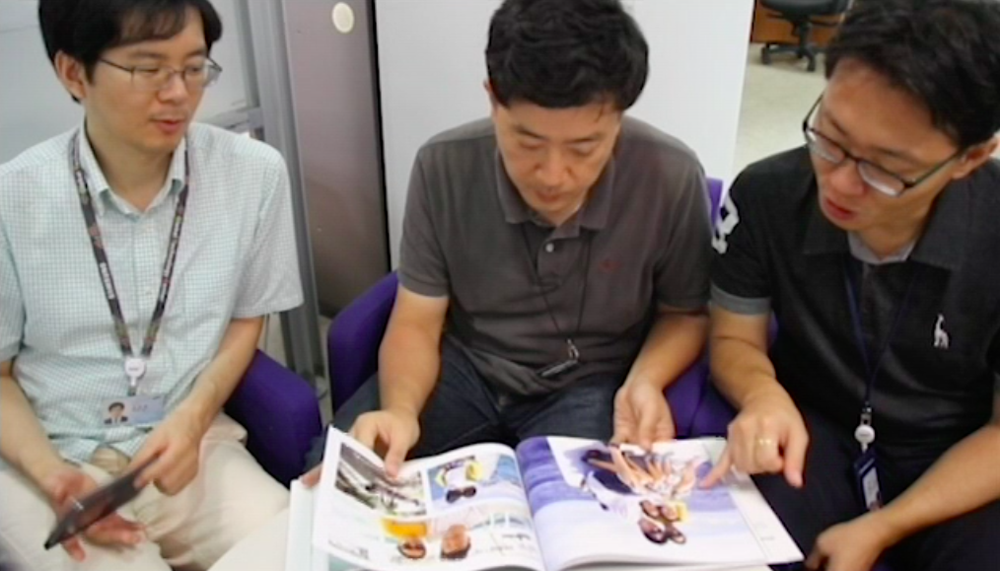

Jun 2014 - Aug 2014 | UI/UX Intern, Samsung Electronics, VIP(Value Innovation Program) Center
The main objective of this project was to find an end-to-end solution which can enhance user experiences in the smart home environment using private cloud system. I participated in the whole process of product design including idea generation, market research, and UI/UX design.
Ideation, Interview & Survey, Personas & Scenarios, Content Design
Even though it gets more easier to create a new record, people are still struggling with dealing with data and archiving meaningful memories. Based on the user needs related to managing personal data, our team explored an optimal experience for family users in the smart home environment. Starting from scratch, we did walk-through of the whole design process from brainstorming and research to user interview and implementing hi-fi prototype.
For the first week, we had several brainstorming sessions to consider the possible user needs as many as possible and come up with creative ideas for the next product using private cloud in the smart home system. We narrowed down our idea to family content manager which offers personalized archiving service to users. In addition, we did some research on smart home environment and cloud platforms.
To be in user’s shoes, I conducted online surveys on the user behavior and preference related to creating, storing, and managing personal contents. The number of respondents from different age group was 101 in total and they answered to 40 simple questions. The survey showed that most of people are not happy with managing their data even though they take photos in everyday lives and upload them to the web cloud. We found that despite all the improvement of recording process that help people generate data easier, the user experience after generating contents is still unpleasant and inconvenient. Also, 70% of respondents wanted to organize their personal photos to share and communicate them with family in a better manner since the current camera roll application doesn’t offer a well-customized experience.
    I also conducted in-depth user interview sessions with 7 potential users who have a basic understanding of the concept of smart home. According to the interview, one of the important reasons for taking and storing photos is to share with friends or family rather than to keep them for themselves. In addition, they are struggling with managing too many photos because it is hard to tell what is meaningful or not. I found that the current cloud services they use have a hierarchical interface on the web browser but it doesn’t enhance a human-friendly experience.
Based on the result of these survey and interview, our team decided to care more about the emotional approach and personalization for each user to build an attractive private cloud service so that the user experience can help people organize and archive their meaningful memories not being frustrated by its interface and effects.
Basically, our application offers an automatic backup system for the family members to archive contents together. On top of that, it categorizes contents by date, event, and place and generates labels using human-friendly language like the hashtags. By mapping the weight value depending on the how long the user stays at the specific content, it makes a priority level for each photo and arranges in order of priority.
Once users register family member’s account and device, the app offers a customized lock screen, which turns out to be helpful when it updates grandparents’ screen automatically.
With the data sorted by its priority depending on how meaningful it is and exif information, the app creates a pop-video, photo collage, or photo book on the special day or anniversary.
We implemented a hi-fi prototype using Rasberry Pi and web application using django framework and pitched final demo successfully. The documentation related to the final demo is under NDA. Since it was evaluated that it has a great potential for improvement, the company continued internal discuss on this project.